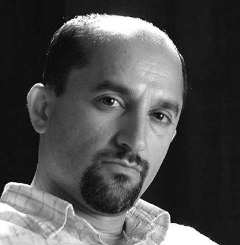

<figure>
	<br>
	<sub>Jalal Sepehr</sub>
</figure>	
<aside>
	<h3>JALAL SEPEHR</h3>
	<p>
		JALAL SEPEHR was born in Tehran in 1968, self-taught, he started doing amateur photography in 1994 as he lives in Japan for three years. When he comes back to Tehran in 1996, he creates with Darushi Kiani the advertising agency Fanoos Studio and then its website, dedicated to iranian contemporary photography discoveries and promotion. He has participated in some seventy photography festivals and competitions in and outside of Iran.<br><br>
		Sepehr says of this series ‘Water and Persian Rugs’ : « I take unexpected environments to create new moments, contrasts and diversity – the rugs float and dance ». An edition of the photograph Galerie Nicolas Hugo shows during the exhibition ‘I RAN WITH IRAN’ is part of the Collection Société Générale.<br><br>
		JALAL SEPEHR is represented by Galerie Esther Woerdehoff in Paris, Silk Road Gallery in Tehran and Richard Young Gallery in London.<br><br>
		He lives and works in Tehran, Iran.
	</p>
</aside>
